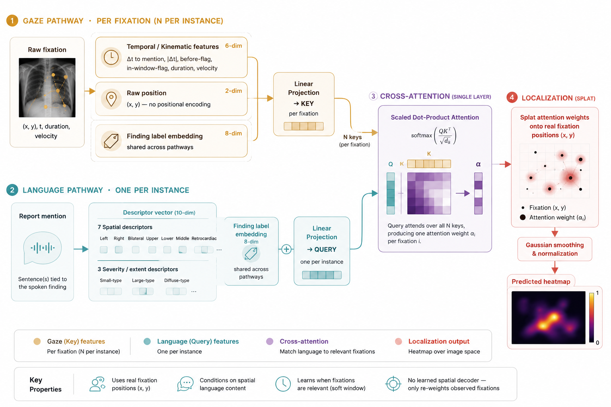

Beyond directional words: how should spatial language shape GazeMed?
Inference-time gaze and speech define a credible research direction. Spatial language can make that direction stronger—but only if it becomes a structured, anatomy-aware constraint and is evaluated against simpler explanations.
01 · Position
The short answer
The central idea is worth pursuing. Most closely related work uses gaze to construct supervision or improve an image model during training. GazeMed instead keeps a new radiologist’s gaze and speech in the inference contract. That is a meaningful distinction.
The spatial-language pathway is also promising, but the current result should be treated as a positive probe, not a finished language contribution. Seven binary location features improve regional overlap reliably; their effect on the binary Pointing metric is smaller and less stable. The next step should therefore deepen the representation and its controls, not enlarge the overall architecture indiscriminately.
02 · Current evidence
What PR #3 actually establishes
The current study compares increasingly informative mechanisms on the same 1,093 finding-level test instances from REFLACX Phase 3.
Select gaze using a fixed pre-mention window.
Learn relevance from gaze–mention timing.
Add x/y and report descriptors to attention.
An earlier project summary quoted 0.233 for the fixed REFLACX baseline. The latest PR technical specification reports 0.2082 after the conditions were aligned on the current 1,093-instance protocol. Results should be cited from one frozen specification rather than mixing stages of the experiment.
The important result is not only that Final scores higher. Two information-removal controls explain part of the gain:
- Position shuffle: permuting x/y among fixations within each instance reduces IoU to 0.2101 and Pointing to 0.4337. The model needs the true relationship between a fixation’s context and its coordinate.
- Spatial-word mask: removing the seven location descriptors reduces IoU to 0.2943 and Pointing to 0.7118. IoU decreases significantly in all five seeds; Pointing reaches significance in only two.
This supports a strong position-correspondence claim and a more qualified spatial-language claim. Treating the two as equally established would obscure the most interesting next question.

03 · Claim boundary
Test-time gaze is novel here. “Real-time” still needs a causal test.
The project’s clean distinction is that it uses gaze and speech for a new case at inference. That should remain central. It is more precise than saying previous work “does not use gaze at inference,” because the literature contains several interactive and broader gaze-conditioned systems; the direct comparison should be limited to the closest CXR localization setting.
However, the current implementation receives the full fixation sequence and includes a signed time difference between each fixation and the mention. A fixation after the spoken phrase can therefore participate in attention. This does not invalidate the localization result, but it changes the operational claim.
A causal replay should define an output clock—such as the end of a finding phrase—and enforce fixation_end ≤ output_time. It should report:
- localization performance at the output clock,
- the fraction of mentions with enough prior gaze to produce a map,
- latency from phrase completion to prediction, and
- the gap between causal-prefix and full-sequence results.
This experiment may reveal that post-mention gaze is valuable verification rather than leakage. If so, the project should distinguish an online discovery mode from an offline or delayed verification mode instead of forcing both into one real-time claim.
04 · Current representation
What the spatial-language pathway does now
The implementation does not embed an unrestricted report sentence. It detects a finding mention with keyword rules and turns the matched sentence into ten binary descriptors.
The resulting vector is concatenated with the finding embedding to form the query. Each fixation key receives time, motion, raw x/y, and the same finding embedding.
The circulated example included “top” and “below.” The current code operationalizes the related concepts as upper and lower; it does not contain a separate below descriptor. This matters because “lower” is a vertical zone, while “below” is a relation between two entities.
This design is excellent as a mechanism probe: it is inspectable, easy to mask, and difficult to confuse with a large pretrained language model. It is less suitable as the final representation of radiological space.
05 · Opportunity
Why spatial language can add something that gaze alone cannot
1. Gaze produces candidates; language can select among them.
A complete reading contains many fixations unrelated to the current finding. If a radiologist has inspected both lung bases, the word “right” can select a subset. If several findings share a region, the finding identity and timing can further disambiguate them.
2. Language can express a coordinate system.
Raw x/y tells the model where a point lies in the image. Language tells it how the clinician organizes that location: left versus right, apical versus basilar, hilar versus peripheral, or behind the heart. These concepts can remain stable across image dimensions and modest viewing transformations.
3. Relations are more informative than isolated directions.
Radiology frequently describes a finding relative to anatomy. Rad-SpatialNet models spatial language with frames containing a trigger and related elements. This offers a natural bridge from a sentence to a constraint over the chest.
4. Language may identify when gaze should be ignored.
Negated, uncertain, comparative, and follow-up statements do not have the same localization meaning as a new positive finding. A structured language pathway can learn or enforce abstention rather than merely shifting a heatmap.
A finding label already predicts a typical anatomical distribution. Spatial words may simply sharpen that prior. GazeMed must show that patient-specific gaze adds value beyond a label-conditioned anatomy map before interpreting language–gaze attention as individualized evidence.
06 · Proposed extension
Move from a keyword vector to an anatomy-grounded spatial frame
A useful intermediate representation should be richer than binary keywords but more auditable than a black-box sentence embedding.
The model can convert the anchor and relation into an interpretable spatial prior, then ask whether temporally relevant gaze refines it. This yields a clear decomposition:
Each arrow becomes a measurable increment. If language alone already localizes the case, gaze should not receive credit. If gaze only helps after the relation is known, the interaction itself becomes the contribution.
Why not begin with a general sentence encoder?
A pretrained encoder may improve scores while hiding whether it learned anatomy, severity, finding identity, or report style. A structured frame supplies coverage statistics, explicit failure modes, controllable ablations, and a clean target for later representation learning.
07 · Evaluation plan
Six experiments that would make the direction convincing
Descriptor and relation audit
Report how often each current descriptor fires, its manual precision, co-occurrence, laterality errors, and finding distribution.
Answers: Is the measured language effect broad or driven by a few common phrases?Finding-conditioned anatomy prior
Create maps from training ellipses only. Compare label-only, label+direction, label+anatomical frame, Temporal, and Final on matched cases.
Answers: Does patient-specific gaze beat typical location?Descriptor-level leave-one-group-out
Remove laterality, vertical zone, anatomy anchor, relation, extent, and uncertainty groups separately.
Answers: Which language family actually changes localization?Cross-instance language swap
Exchange spatial frames between compatible findings while preserving label and model capacity.
Answers: Is the model using case-specific language or a generic finding cue?Incremental phrase replay
Update the query as words arrive and reveal only past fixations. Measure the first time a stable, correct region emerges.
Answers: When does language become useful in a live interpretation?Compositional holdout
Hold out selected finding–relation or anchor–relation combinations while retaining their components in training.
Answers: Does the representation compose, or memorize phrase templates?These tests are more informative than comparing several large encoders on one split. They reveal whether language supplies a reusable spatial abstraction and whether gaze provides patient-specific residual information.
08 · Recommendation
A coherent direction for the project
The small finding-conditioned cross-attention, real fixation splatting, and information-removal controls.
Describe the current system as test-time gaze + speech localization until causal prefix replay is complete.
Add a label-conditioned anatomy prior, mention-link audit, and grouped split sensitivity.
Replace binary spatial descriptors with anatomy-grounded frames and evaluate them incrementally.
Explore image–behavior fusion after per-instance errors show meaningful complementarity.
The most defensible contribution is therefore not “a model that adds gaze to a large medical vision system.” It is a controlled account of how a radiologist’s gaze, timing, and spatial language jointly ground a spoken finding, with explicit tests for the simpler explanations that could produce the same result.
Sources
- GazeMed PR #3 — current architecture, technical specification, controls, results, and reproduction code.
- Lanfredi et al. (2022), REFLACX — dataset design and synchronized gaze–dictation collection.
- Lanfredi et al. (2023) — label-specific eye-tracking supervision using a fixed pre-mention window.
- Datta et al. (2020), Rad-SpatialNet — frame-based spatial relations in radiology reports.
- GradTrack (MICCAI 2025) — gaze position, duration, and temporal order for weakly supervised segmentation.
- RadZero (2025) — image–phrase grounding used as the external baseline in PR #3.